Verification scenarios
| # | Scenario | Spec | Status |
|---|---|---|---|
| 4.1 | Empty-search prompt builds the prefilled link | FR-F-42, F-23, F-28 | ✅ Passed |
| 4.2 | Guest logs in or registers from the prompt and lands on the form | FR-F-43 | ❌ Failed |
| 4.3 | /add tile with new-match count | FR-F-40 | ✅ Passed |
| 4.4 | "Konto" row with real counts, nav highlight | FR-F-41, F-62 | ✅ Passed |
| 4.5 | Want form order, copy, controls | FR-F-21, F-22, F-25, F-26 | ✅ Passed |
| 4.6 | Form validation and server errors | FR-F-24, F-27, F-29, W-03, W-08 | ✅ Passed |
| 4.7 | Want list (empty, cards, expired, found) | FR-F-10..15 | ✅ Passed |
| 4.8 | Forward match on create | FR-M-01, L-01 | ✅ Passed |
| 4.9 | Scan match and bell rows (1, summed 2, new 1 after read, reminder) | FR-S-02, N-03..05 | ✅ Passed |
| 4.10 | Match page states and actions | FR-F-30..39, L-02..06 | ✅ Passed |
| 4.11 | Edit a want (note-only keeps matches) | FR-W-05, W-06 | ✅ Passed |
| 4.12 | Take flow and closing prompt | FR-F-50..55 | ⚠️ Passed with issues |
| 4.13 | Cap of 30 active wants | FR-L-10, W-07 | ✅ Passed |
| 4.14 | Accessibility spot-checks, 390 px | a11y standard | ⚠️ Passed with issues |
The prompt link carries name, category, offer_type, locality, radius, and the form opens prefilled with "Doprecyzuj" expanded and the back link "‹ Szukaj". After login or registration from that client-side path, the page stays on a blank /login?returnTo=…. A full page load of the same URL, or the guest /add tile, redirects correctly.
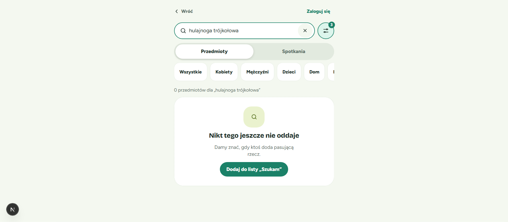

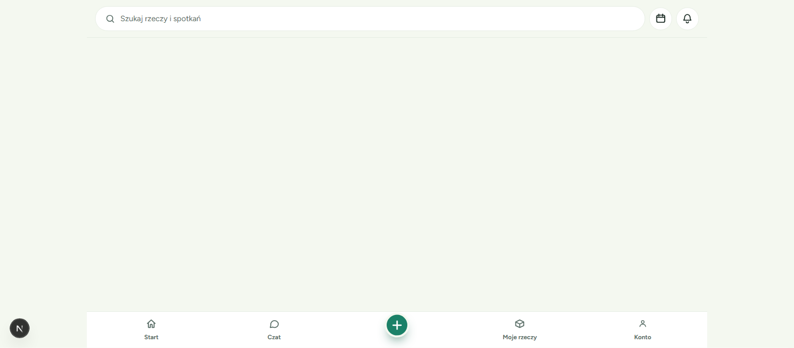
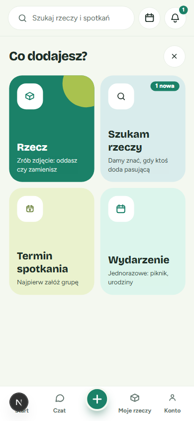
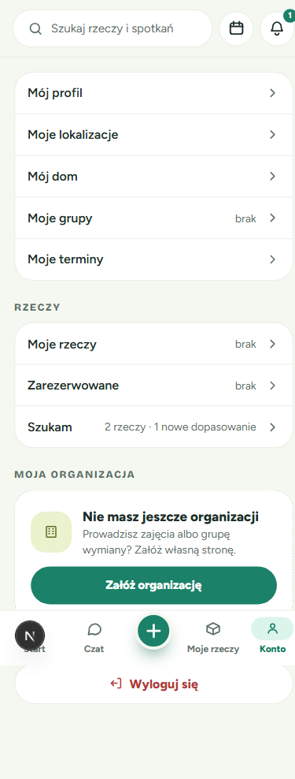

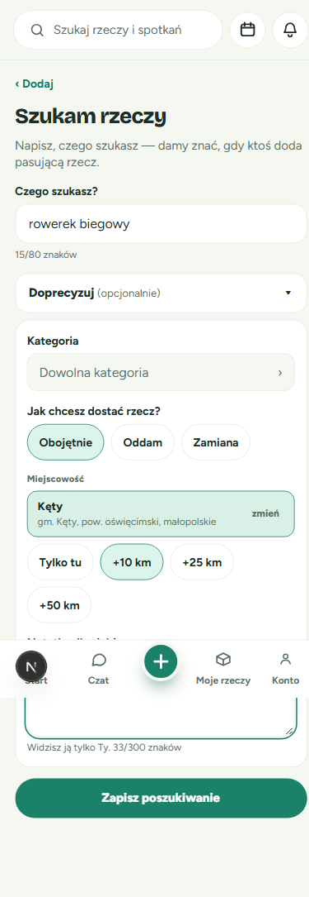
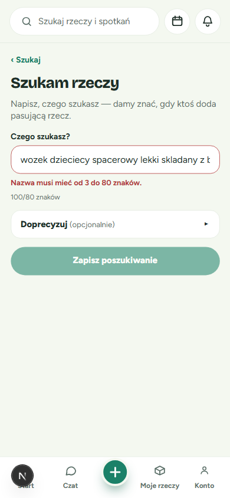

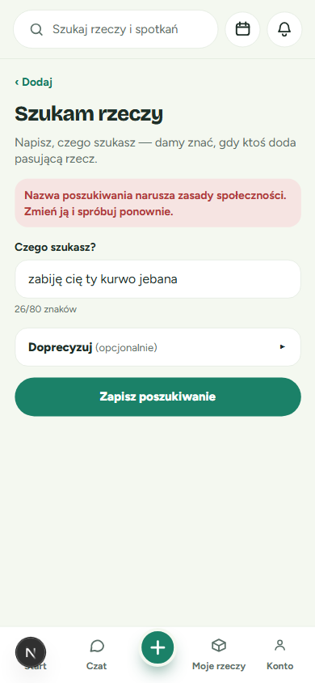
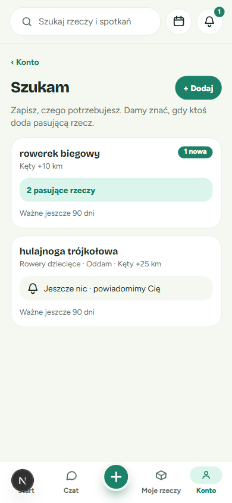
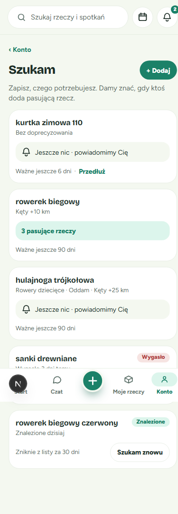

Forward matches are stored when the want is created, already seen and with no notification. Scan runs: pairs=1 notifications=1 each time. An unread row is replaced by "2 nowe pasujące rzeczy". Once read, the next run writes a new count-1 row that opens the item page. The 7-day reminder row is written.
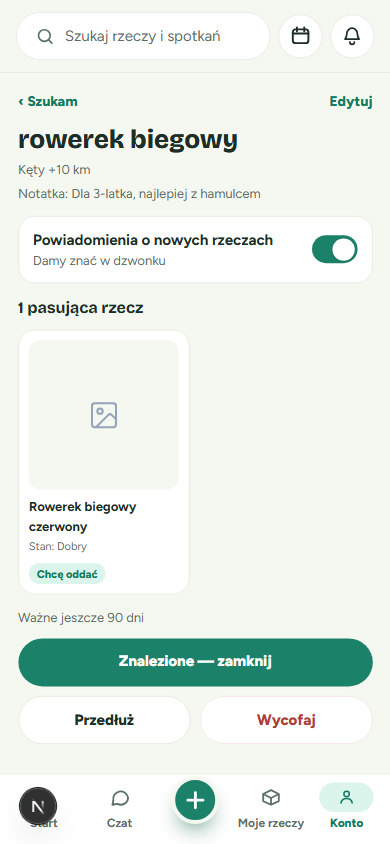
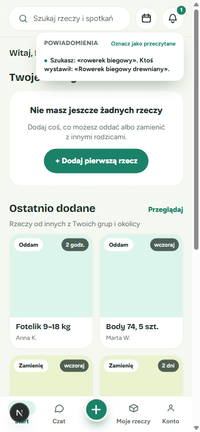


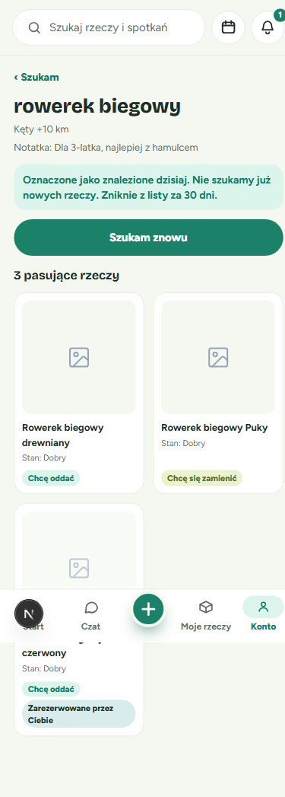


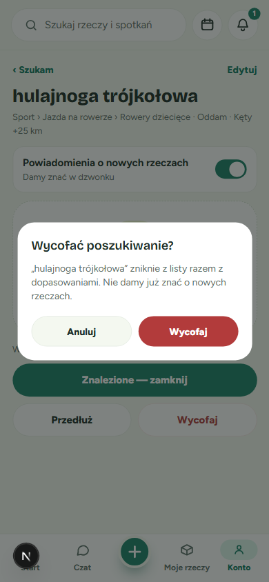
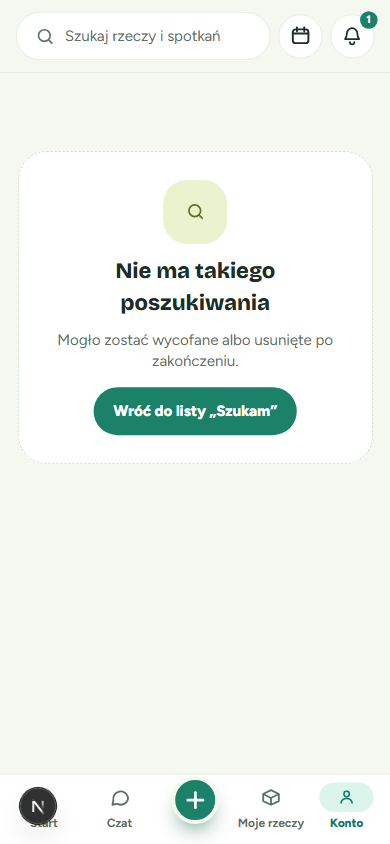


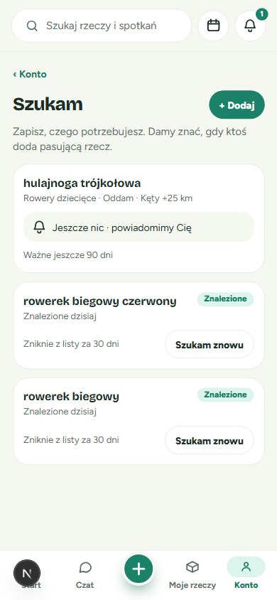
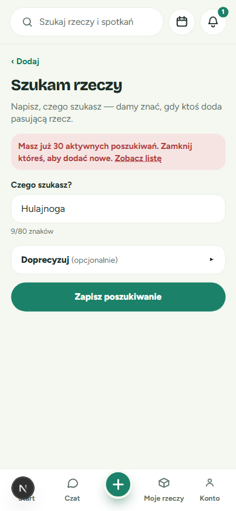
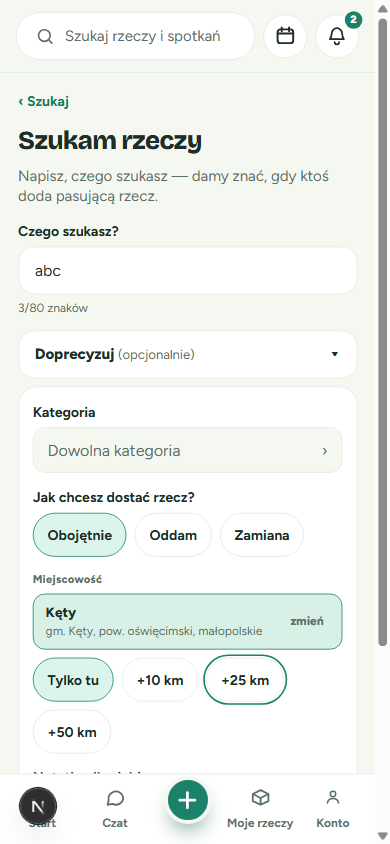
Discrepancies
MajorMajor-1: Guest stuck on a blank /login after logging in or registering from the empty-search prompt (FR-F-43)
Hypothesis: the Next client router keeps the proxy's guest redirect for /add/wanted?… (under the /add/ protected prefix). The <Navigate> in AuthGuard replays it and never retries. Fix: no prefetch on the prompt link, or link guests straight to authPath("login", returnTo), or use a hard navigation / router.refresh() after authentication. Workaround: reload.
MinorMinor-1: SAWarning cartesian product on every scan run: app/wants/application/matcher.py:74-87, the recursive category-path CTE. Results are correct; it is log noise.
CosmeticCosmetic-1: two console 404s (want and matches) after a withdraw, from the prefix invalidation.
CosmeticCosmetic-2: in the form, the "Miejscowość" label style is smaller and lighter, and "+50 km" wraps at 390 px.
CosmeticCosmetic-3: the "Zarezerwowano!" toast covers the closing sheet's primary button for about 3 s.
Console & network errors
| Source | Message | Frequency | Severity |
|---|---|---|---|
GET /api/organizations/mine | 404 (no organization) | Every panel page | Minor (pre-existing, unrelated) |
GET /api/wants/{id}, /matches | 404 after withdraw | Once per withdraw | Cosmetic |
| Backend scan stdout | SAWarning cartesian product "category_path" | Every run | Minor |
Spec alignment
Fully implemented: entry points; form; validation and errors; forward and scan matching; bell rules and links; list states; match page states and actions; note-only edit; closing sheet; cap; 404 for a foreign or withdrawn want.
Partially: FR-F-43, the guest return after authentication.
Extra: the "Przedłuż o 90 dni" layout for 7 days or fewer is in the code but unreachable, because of auto-extension (FR-L-02).
Variances: scan run by hand; dates moved in the DB; cap filled through the API; not exercised: "Twoja propozycja", "Zarezerwowane" (third party), 503 paths, a matching-field edit that resets matches.
Exit criteria
| Criterion | Status |
|---|---|
| Core 1–5, 7–10 | ✅ |
| Core 6: edit; a matching-field change searches again (only the note-only path verified) | ⚠️ |
| Core 11: three entry points incl. guest forwarding | ❌ |
Recommendations
Must fix before merge: Major-1, or defer it explicitly as a general routing follow-up.
Should fix soon: Minor-1.
Nice-to-have: Cosmetic-1, Cosmetic-2, Cosmetic-3.
Conclusion: ⚠️ GO WITH CAVEATS: fix or defer Major-1, then merge. Deployment stays behind the spec's release gate.